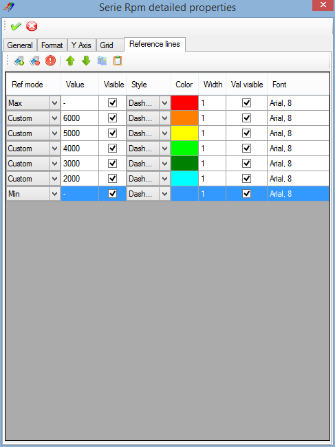
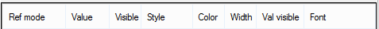

A reference line is a line drawn at a particular value of a graphic serie. A single serie can have multiple reference lines and reference lines can be used as a complement of the serie custom grid.
Reference lines are usually horizontal except in the case of abscisse reference line where they are vertical.
The 'Reference lines' tab of the 'Graphic serie detailed properties' window permits to set up those reference lines.

The 'Reference lines' tab is composed by a tool bar, containing reference lines control commands, and by grid showing properties of reference lines created by the user.
 Add: Create a new reference line.
Add: Create a new reference line.
 Delete: Delete reference lines selected.
Delete: Delete reference lines selected.
 Clear: Delete all reference lines.
Clear: Delete all reference lines.
 Move up: Move a reference line up in the list.
Move up: Move a reference line up in the list.
Move down: Move a reference line down in the list.
 Copy: Copy a reference line.
Copy: Copy a reference line.
 Past: Past a reference line in the list.
Past: Past a reference line in the list.
The reference lines grid has different columns for the different properties of a reference line.

Value of a reference line may be defined by different methods.
Example of a graphic using reference lines:

Created with the Personal Edition of HelpNDoc: Free EPub producer